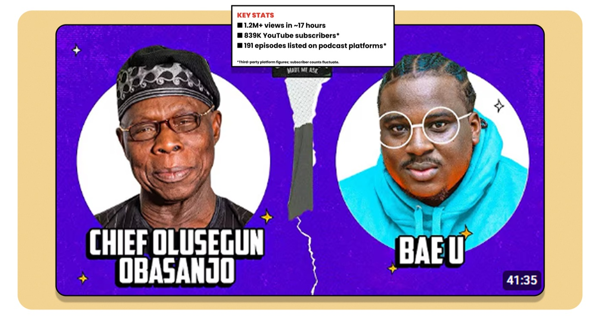
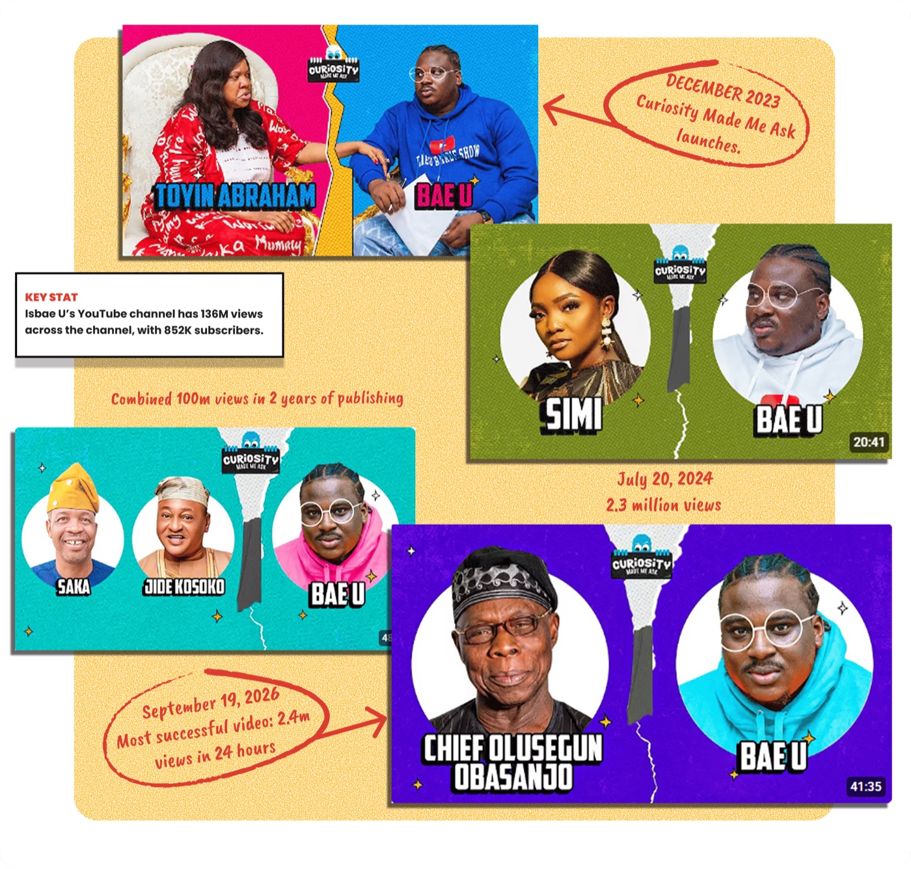
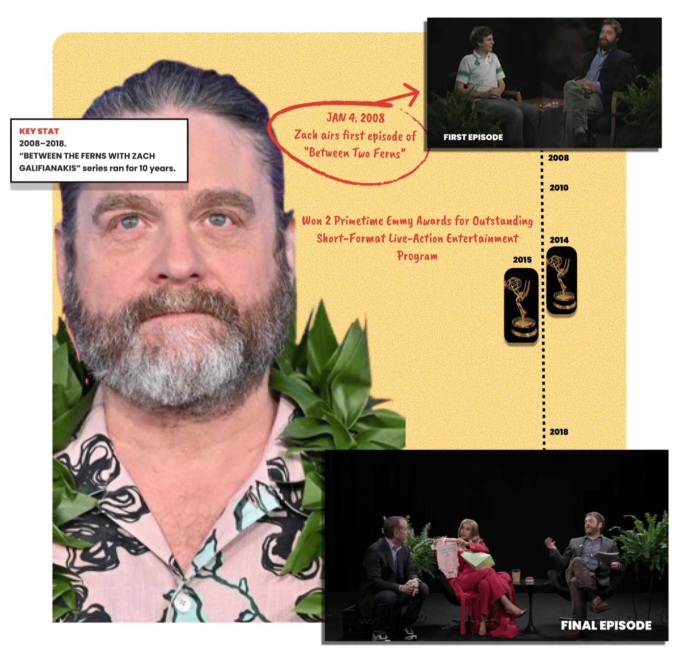
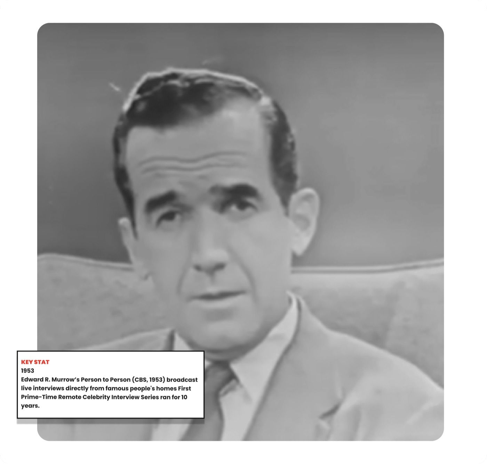
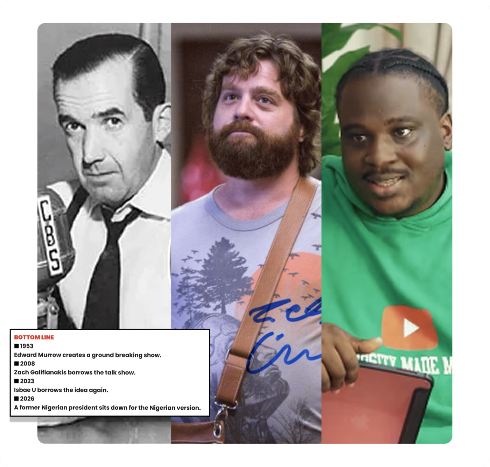

Former President Olusegun Obasanjo just sat across from Isbae U on Curiosity Made Me Ask.
Not a traditional journalist.
Not a TV anchor.
A comedian whose whole thing is asking celebrities questions they probably wish nobody had asked.
And somehow, Baba Iyabo sat down and played along.
The episode crossed 2M YouTube views in under 24 hours, with reports placing it at roughly 1.5M after 17 hours. (Source: Prime Times)

And Former President Obasanjo is only the latest name on the list.
Pete Edochie.
Jide Kosoko.
Kate Henshaw.
Yemi Solade.
Teni.
Bella Shmurda.
Odumodublvck.
Victor Boniface.
Bobrisky.
Tacha.
Bovi.
The little comedy interview has become a serious guest-acquisition machine.
BUT IT DIDN'T START THERE
Curiosity Made Me Ask launched in December 2023.
The formula was simple:
Put a famous person in a chair.
Ask uncomfortable questions.
Make fun of them.
Let them fight back.
Repeat.
It worked because Isbae U understood something important:
The interview wasn't really the product.
The reaction was.
A normal celebrity interview gives you information.
Isbae U gives you a moment you want to send to your group chat.
And the format became recognisable enough that viewers could predict the experience before the guest even sat down.
That's good format design.
But there's one problem with calling it completely original.

THE "ORIGINAL"
Enter Zach Galifianakis.
In 2008, Galifianakis launched Between Two Ferns with Scott Aukerman.
Two chairs.
Two ferns.
One celebrity.
Then Galifianakis would spend the interview making the guest deeply uncomfortable.
Brad Pitt.
Jennifer Lawrence.
Charlize Theron.
Sean Penn.
Justin Bieber.
Barack Obama.
Hillary Clinton.
The joke was that it looked like a cheap celebrity interview while behaving like an elaborate roast.

Sound familiar?
Even the basic mechanics are strikingly similar:
Celebrity + familiar interview setup + deliberately uncomfortable questions + host-as-character + guest reaction = entertainment.
But here's where it gets interesting.
Galifianakis didn't invent the celebrity interview either.
THE ORIGINAL ORIGINAL
The celebrity interview is much older than YouTube.
In 1953, Edward R. Murrow began Person to Person on CBS, interviewing famous people from their homes.
It featured celebrities and public figures in an unusually intimate setting for television at the time.
The format became a landmark in celebrity interviewing.
So where did Between Two Ferns come from?
Galifianakis has explained that he wanted to subvert the fake, overly polite celebrity interview.
He had already hosted Late World With Zach and wanted another shot at the talk-show format.
The solution?
Make it look like a broke public-access programme.
Two chairs.
A bad-looking set.
Two ferns.
Then bring in an actor and improvise.
In other words:
Murrow created the interview language.
Galifianakis twisted it.
Isbae U twisted it again.
And that is where "copying" gets more interesting.

COPYCAT OR CREATIVE?
Nobody bats an eyelid when a Nigerian artist samples an American record.
Or when a producer takes a familiar sound and gives it a new beat.
Because we understand something:
An idea can travel without arriving unchanged.
Curiosity Made Me Ask clearly shares DNA with Between Two Ferns.
There are even Nigerian commentators who have explicitly described it as a localised version of the Zach Galifianakis format.
But Isbae U didn't simply transplant Hollywood into Lagos.
He changed the language.
The references are Nigerian.
The insults are Nigerian.
The power dynamics are Nigerian.
The humour depends on Yoruba phrases, Nigerian celebrity culture, class markers, Nollywood history and the very Nigerian pleasure of watching somebody important get dragged a little.
That's the interesting part.
He took a foreign format and asked:
What would this look like if it grew up here?
That's not the same thing as inventing from zero.
And frankly, very little good culture is invented from zero.
ORIGINALITY IS OVERRATED

Isbae U didn't invent the celebrity interview.
He didn't invent the awkward interview.
He didn't invent the roast.
He didn't invent the fake talk show.
He found a format that already worked, understood why it worked, then rebuilt it for an audience that understood a completely different set of references.
And now?
A show born from a borrowed format has put one of Nigeria's former presidents in the hot seat and pulled seven-figure views in hours.
That's the lesson.
Don't obsess over being the first person to have an idea.
Find something worth stealing.
Understand what makes it work.
Then make it so culturally yours that people stop asking where you got it.
Originality isn't always creating the seed. Sometimes it's knowing what to grow from it.
Want us to handle creator partnerships and PR for your next campaign?
This article first appeared in That Good Scoop, our bi-weekly drop of fresh ideas on PR, branding, influencer marketing and growth.
Subscribe to That Good Scoop